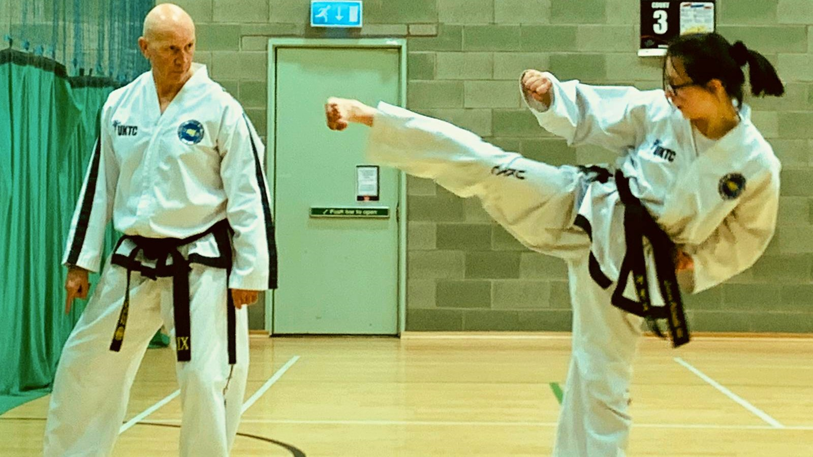
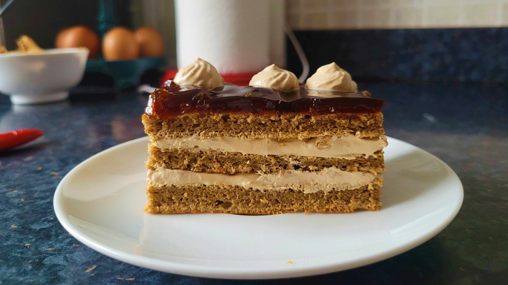
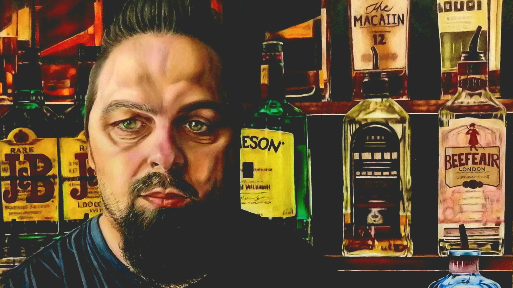

Exceeded case and workload targets consistently which improved the overall timescale of the P85, 240 and P87 sectors.
Supported my team as well as other teams by providing support for casework queries.
Created video walkthrough tutorials and support materials for managers and different teams to utilise.
Achieved 100% accuracy rate while maintaining record breaking case turnover rates.
Handled a wide range of life and pensions products, dealt with both inbound and outbound calls as well as associated administrative work.
Worked accurately and efficiently to ensure customers received correct and timely information, including making risk based decisions that support the delivery of good customer outcomes
Consistently achieved excellent customer outcomes by effectively responding to customer demands through multiple channels and coordinating with various internal and external departments.
Observed contractual and legal obligations by adhering Diligenta's corporate policies, procedures and guidelines. Including, Data Protection, Information Security, Anti-Financial Crime laws and policies.
Represented a number of housing associations, taking phone calls from tenants and deploying engineers on an emergency basis.
Employed excellent communication and conflict management skills, resolving any caller issues efficiently and maintaining a solid relationship with callers.
Quickly adapted to new contracts, documentation procedures and systems while maintaining excellent performance throughout.
Kept calm in highly stressful situations while prioritising the caller's safety and accurately reporting back to escalation managers and emergency services.
Successfully executed emergency deployment for tenants whilst managing multiple tasks effectively.
Computing Science, BSc
I am currently in my first semester of my first year on the above course. During this semester I am studying four classes: Programming 1, Modelling and Problem Solving for Computing Science, Web Development and Finance, Risk and Investment.
I have spent 15 years training in ITF Taekwon-do, a Korean martial art developed in the 1940s by General Choi Hong-Hi during the Korean civil war. During my training I have achieved a Second-Dan Black Belt, a rank which I am extremely proud of as it took much dedication and perseverance.
I have also earned numerous medals in tournaments, competitions and championships in the Sparring, Pattern and Special Technique categories. Most recently I earned silver competing in the World ITF Taekwondo Championships. In my last 5 years of training, I became a teacher and demonstrator and aided in the running of several events.
Definitely a 180 degree turn from the martial arts however, during lockdown, like many people I found my passion for baking. I enjoy both the freedom and pressure this activity offers while also letting my creativity flow freely.
Over the years I have gotten more and more grandiose with my baking excursions and while I still love baking the occasional chocolate chip cookies, my favourite style of baking has been Korean pastries. These offer more ambitious techniques and utilisation of natural flavourings and methods of incorporating these in my deserts.
From a young age I have enjoyed creatively expressing myself. This started with pottery, jewellery making and drawing. I developed this skill and passion in high school as the curriculum offered a more structured and deliberate way of polishing my abilities.
Over the years I developed an affinity for oil painting, especially on a larger scale as this more fit my style of portraiture. I ended up applying to The Glasgow School of Art and getting accepted however ultimately, I changed my education trajectory to computing science.
